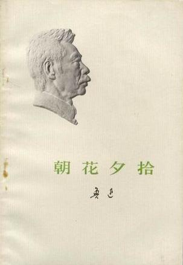

 《朝花夕拾》里作者鲁迅用夹叙夹议的方法，以青少年时代的生活经历为线索，真实生动地叙写了自己从农村到城镇，从家庭到社会，从国内到国外的一组生活经历，抒发了对往昔亲友和师长的怀念之情，同时也对旧势力、旧文化进行了嘲讽和抨击。 [4]
1925年，鲁迅在北京担任大学讲师期间，因支持学生运动而受到当时所谓“正人君子”的流言攻击和排挤。1926年，北洋军阀政府枪杀进步学生，制造“三·一八”惨案。作者鲁迅写下《纪念刘和珍君》等一系列文章，热情支持学生的正义斗争，控诉北洋军阀政府的残暴，结果遭到当局的通缉而不得不远走厦门避难。《朝花夕拾》中的作品虽然都是在追忆往事，但也是“借题发挥”，影射、讥讽当时的社会现实。 [5]